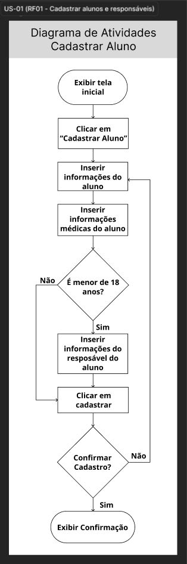
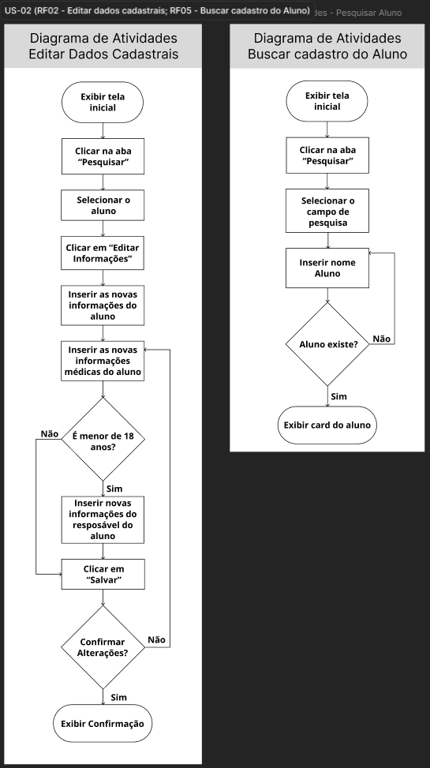
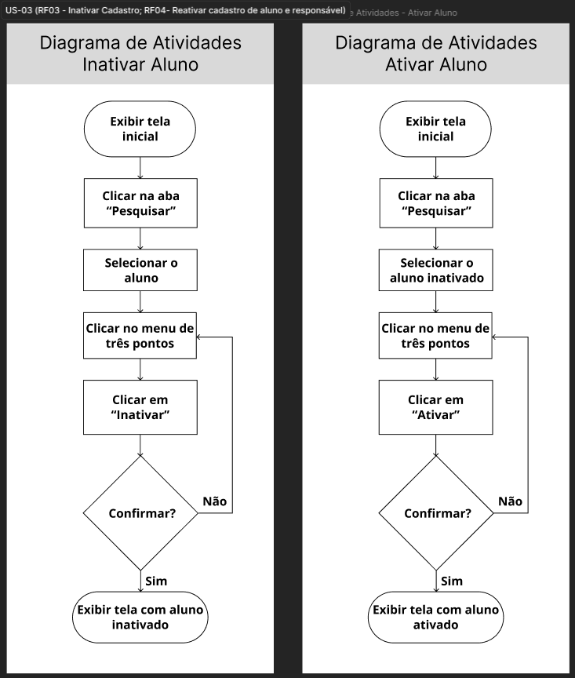

Evidências — Ciclo 2
Período: 29/05/2026 a 03/06/2026
Histórias trabalhadas: US-01, US-02, US-03
Engenharia de Requisitos
Gravações e Atas
| Evidência | Descrição |
|---|---|
| Gravação 03/06 | Este vídeo apresenta a reunião de priorização do MVP realizada com a técnica MoSCoW e o apoio visual do Miro. Durante a dinâmica, a equipe e os clientes revisaram as histórias de usuário (US-01, US-02, US-03) e decidiram reduzir a prioridade da funcionalidade de criação de turmas para a categoria 'Should', justificando que ela não é essencial para o lançamento inicial por ser um processo pouco frequente. |
| Ata 03/06 | Ata da reunião do dia 03/06/2026 com a Priorização do MVP utilizando a técnica MoSCoW |
Protótipos
Hold "Alt" / "Option" to enable pan & zoom

Hold "Alt" / "Option" to enable pan & zoom

Hold "Alt" / "Option" to enable pan & zoom

Hold "Alt" / "Option" to enable pan & zoom

Hold "Alt" / "Option" to enable pan & zoom

Hold "Alt" / "Option" to enable pan & zoom

Engenharia de Software
Diagramas de Atividades
Hold "Alt" / "Option" to enable pan & zoom

Hold "Alt" / "Option" to enable pan & zoom

Hold "Alt" / "Option" to enable pan & zoom

Definition of Done
Checklist do Ciclo 2
| Critério do DoD | Evidência | Status |
|---|---|---|
| A funcionalidade atende aos critérios de aceitação? | Issue #1 Issue #2 Issue #3 |
✅ |
| O código passou por revisão via Pull Request? | PR #116 | ✅ |
| Os testes automatizados foram executados e passaram? | PR #116 | ✅ |
| Os workflows de build foram executados com sucesso? | Release v1.0.0 | ✅ |
| A documentação foi atualizada? | PR #120 | ✅ |
| A funcionalidade foi testada e aprovada pelo cliente? | Gravação | ✅ |